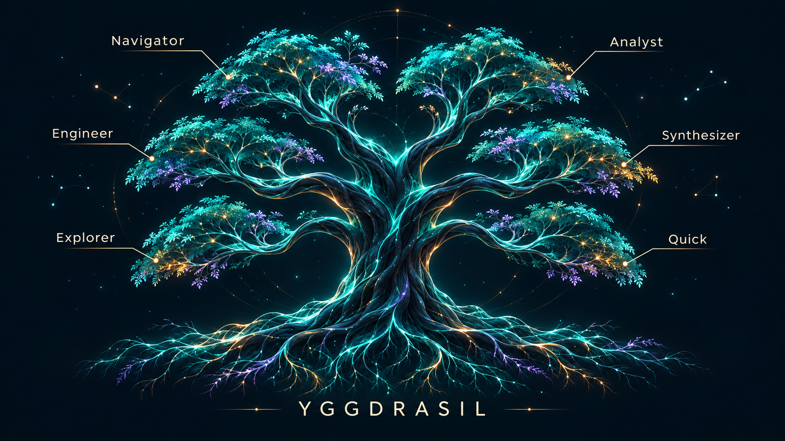

Trinity CortexSYSTEM SCREENSHOT
Yggdrasil Tree
The actual world-tree workspace brings mounted services and mode selection together with Trinity Chat, the Roots foundation panel, State Weaver and System Health.
Navigator · Analyst · Engineer · Synthesizer · Explorer · Quick
Actual system screenshot · Captured interface state, not a live connection · Enlarge to inspect.
View concept artwork

Concept artwork, distinct from the actual interface above.
Trinity CortexSYSTEM SCREENSHOT
Conversation History
Revisit exchanges in context. Mode filters, timestamps and reasoning-path labels help you follow a session, distinguish synthesis from arbitration, and see where a fallback occurred.
History / Cognitive modes / Reasoning paths
Actual system screenshot · Recorded session history · Enlarge to inspect
Explore context & memory →Raven AgentSYSTEM SCREENSHOT
Raven
The Raven cockpit brings chat history, a cognitive avatar, connection status, session counters and workspace file listings into view. This capture shows Direct Remote API chat; OpenClaw tools and tasks are unavailable in this mode.
Chat / Tasks / Workspace
Actual system screenshot · Captured interface state, not a live connection · Enlarge to inspect.
Session AnalyticsSYSTEM SCREENSHOT
Session Analytics
Review a session across cycles: compare divergence and PRIME activity, inspect fallbacks and errors, and drill into a selected cycle’s context. Summary cards surface recorded usage and priced costs alongside the chart.
Divergence / Arbitration / Reliability / Cost
Actual system screenshot · Recorded 200-cycle sample · Costs shown exclude unpriced cycles · Enlarge to inspect
Session AnalyticsSYSTEM SCREENSHOT
Cycle Inspection
Move from the session overview into individual cycles. Review mode runes, reasoning paths, divergence and error flags, then inspect shard timing and the ENG, SYNTH, PRIME and final outputs.
Rune key / Cycle history / Shard timing / Outputs
Actual system screenshot · Recorded session sample · Enlarge to inspect
System InstrumentsSYSTEM SCREENSHOT
Instruments
The Trinity control panel brings phase, divergence, stress, latency and working memory into view, alongside rune state and system health.
Phase / Divergence / Latency / Memory / Health
Actual system screenshot · Captured values, not live telemetry · Enlarge to inspect
Trinity CortexSYSTEM SCREENSHOT
LTKG graph viewer
Explore connected concepts and inspect a selected node’s graph metrics. Observatory tools provide reference markers, cluster markers, vectors and angles for navigating relationships.
Concepts / Node inspection / Observatory
Actual system screenshot · Captured graph state, not live data · Enlarge to inspect
System StatusSYSTEM SCREENSHOT
Process Manager
Inspect service status and process controls in the observability workspace. The response panel pairs a sigil with divergence heuristics, while the Roots rail keeps memory and knowledge-graph state in view.
Processes / Service status / Response sigil / Observability
Actual system screenshot · Captured state; controls are not interactive here · Enlarge to inspect
Trinity CortexSYSTEM SCREENSHOT
State Weaver
A clockwise trail of rune transitions surrounds the central weave, with cycle and state indicators below. Content threads forward while metrics thread sideways.
Rune / Transition / Continuity
Actual system screenshot · Detail from the Yggdrasil interface · Enlarge to inspect.